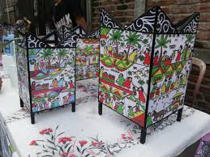

PROFIL MAHASISWA
Profil Guru PPL Informatika
Perjalanan singkat mengenai identitas diri, latar belakang budaya, inspirasi, serta tujuan menjadi guru profesional.
A. Identitas Diri
| Nama Lengkap | : Kaffin Ahmad Mukhtasor |
| NIM | : 2500103916225012 |
| Asal Daerah | : Gresik |
| Kampus | : Universitas Negeri Surabaya (UNESA) |
| Bidang Studi PPG | : Informatika |
| Tempat PPL | : SMAN 17 Surabaya |
Tentang Saya
Saya merupakan mahasiswa Program Pendidikan Profesi Guru (PPG) bidang Informatika dari Universitas Negeri Surabaya (UNESA) yang melaksanakan Praktik Pengalaman Lapangan di SMAN 17 Surabaya. Saya memiliki minat dalam pengembangan pembelajaran berbasis teknologi yang inovatif, kreatif, dan adaptif terhadap perkembangan pendidikan di era digital.
B. Cerita Daerah Asal
Saya berasal dari Kabupaten Gresik, sebuah daerah yang dikenal sebagai kota santri dan memiliki sejarah kuat dalam perkembangan penyebaran agama Islam di Indonesia. Gresik memiliki banyak peninggalan sejarah dan budaya, mulai dari tradisi religi, wisata makam wali, hingga berbagai makanan khas seperti pudak, otak-otak bandeng, dan nasi krawu yang menjadi identitas daerah.
Masyarakat Gresik dikenal memiliki budaya gotong royong, religius, disiplin, serta menjunjung tinggi nilai kerja keras dalam kehidupan sehari-hari. Lingkungan sosial yang penuh kebersamaan tersebut membentuk karakter saya untuk selalu menghargai proses, bertanggung jawab, serta terus belajar dan berkembang menjadi pribadi yang bermanfaat bagi orang lain.
Tugu Keris Sumbilang Gandring
Ikon modern Kabupaten Gresik yang melambangkan sejarah, budaya, dan semangat masyarakat Gresik.

Sunan Giri
Salah satu wisata religi terkenal di Gresik dan pusat penyebaran agama Islam di Pulau Jawa.

Maulana Malik Ibrahim
Tokoh penyebar agama Islam pertama di Gresik yang dikenal sebagai Sunan Gresik.

Nasi Krawu
Kuliner khas Kabupaten Gresik dengan cita rasa gurih dan pedas yang sangat terkenal.

Pudak Gresik
Makanan tradisional khas Gresik yang terbuat dari tepung beras dan dibungkus pelepah pinang.

Damar Kurung
Kesenian lampion tradisional khas Gresik dengan gambar cerita bernilai budaya dan sejarah.
C. Inspirasi Menjadi Guru
Inspirasi saya menjadi guru berasal dari lingkungan keluarga yang dekat dengan dunia pelayanan masyarakat, baik di bidang pendidikan, kesehatan, maupun sosial. Sejak kecil saya terbiasa melihat bagaimana pekerjaan yang dilakukan dengan ketulusan dapat memberikan manfaat besar bagi orang lain. Lingkungan tersebut membentuk cara pandang saya bahwa keberhasilan hidup bukan hanya tentang pencapaian pribadi, tetapi juga tentang seberapa besar manfaat yang dapat diberikan kepada masyarakat.
Ketika menempuh pendidikan, saya semakin menyadari bahwa sosok guru memiliki peran yang sangat penting dalam kehidupan seseorang. Guru bukan hanya mengajarkan materi pelajaran, tetapi juga menjadi pembimbing, motivator, dan teladan bagi peserta didik. Dari seorang guru, siswa dapat belajar tentang kedisiplinan, tanggung jawab, kerja keras, hingga nilai-nilai kehidupan. Hal inilah yang membuat saya tertarik untuk menjadi seorang pendidik, karena saya ingin ikut berkontribusi dalam membentuk generasi muda yang berilmu, berkarakter, dan memiliki semangat untuk terus berkembang.
Selain itu, saya percaya bahwa pendidikan adalah salah satu jalan terbaik untuk membawa perubahan positif bagi masa depan. Menjadi guru bagi saya bukan sekadar profesi, tetapi sebuah pengabdian yang membutuhkan kesabaran, keikhlasan, dan komitmen untuk terus belajar. Saya ingin menjadi guru yang tidak hanya hadir untuk mengajar di kelas, tetapi juga mampu memberikan semangat, perhatian, dan inspirasi kepada siswa agar mereka percaya terhadap kemampuan diri sendiri dan berani meraih cita-cita mereka.
Sosok Guru Inspiratif
Eny Budiandaruwati, S.Pd.
Salah satu sosok guru yang paling menginspirasi saya adalah Ibu Eny Budiandaruwati, S.Pd., guru Fisika saya saat SMP. Beliau merupakan guru yang memiliki cara mengajar yang tegas, sabar, dan mampu membuat siswa merasa nyaman dalam belajar. Meskipun mata pelajaran Fisika sering dianggap sulit, beliau mampu menjelaskan materi dengan sederhana dan menarik sehingga siswa lebih mudah memahami pelajaran.
Hal yang paling saya kagumi dari beliau bukan hanya kemampuan mengajarnya, tetapi juga perhatian dan dedikasinya kepada siswa. Beliau selalu mendorong siswa untuk percaya diri, aktif bertanya, dan tidak takut melakukan kesalahan saat belajar. Sikap beliau yang hangat dan penuh semangat membuat saya menyadari bahwa seorang guru dapat memberikan pengaruh besar dalam membentuk pola pikir dan masa depan siswa. Dari beliau, saya belajar bahwa menjadi guru bukan hanya tentang menyampaikan ilmu, tetapi juga tentang memberikan motivasi, keteladanan, dan harapan bagi peserta didik.
D. Tujuan Menjadi Guru Profesional
Membentuk Siswa Aktif
Mendorong peserta didik untuk aktif, kreatif, dan berani mengembangkan potensi diri.
Pembelajaran Menyenangkan
Menciptakan suasana belajar yang nyaman, interaktif, dan bermakna bagi siswa.
Adaptif dan Reflektif
Menjadi guru yang mampu beradaptasi dengan perkembangan teknologi dan terus melakukan refleksi diri.